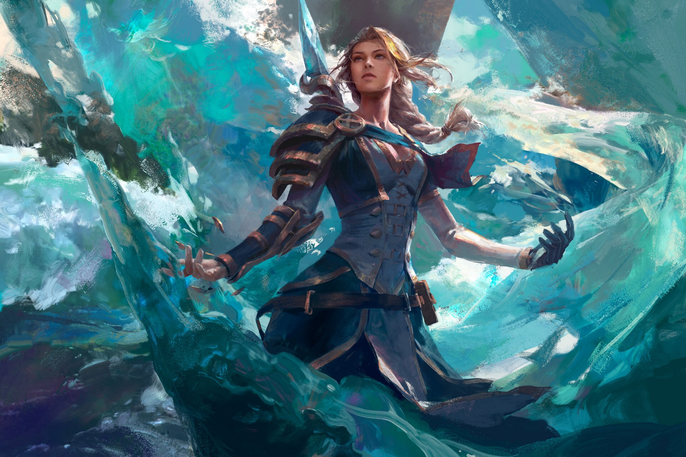

Thrall

Faction: Horde
Role: Shaman, Former Warchief
Race: Orc
Thrall, also known as Go'el, is a central figure in the history of the Horde. Born into slavery, he rose to become Warchief and later helped unify the orc clans. A powerful shaman, Thrall is deeply connected to the elements and works to bring peace between factions when possible.
Jaina Proudmoore
Faction: Alliance
Role: Mage, Leader of Kul Tiras
Race: Human
Jaina is one of the most powerful mages in Azeroth. Once an advocate for peace, she has experienced great loss and betrayal. After the destruction of Theramore, she became a fierce leader and took her place as Lord Admiral of Kul Tiras.
Arthas Menethil

Faction: Scourge (Formerly Alliance)
Role: Paladin turned Lich King
Race: Human (Undead)
Once a noble paladin of Lordaeron, Arthas's descent into darkness is one of the most iconic stories in Warcraft lore. In a desperate attempt to save his people, he claimed the cursed blade Frostmourne, ultimately becoming the Lich King and ruler of the undead Scourge.
Sylvanas Windrunner

Faction: Forsaken (Formerly Horde)
Role: Banshee Queen
Race: Undead Elf (High Elf)
Once the ranger-general of Silvermoon, Sylvanas was slain by Arthas and resurrected as a banshee. She later broke free of the Lich King's control and became the leader of the Forsaken. Her actions in recent expansions have made her one of the most controversial characters in WoW history.
Anduin Wrynn

Faction: Alliance
Role: King of Stormwind
Race: Human
Son of Varian Wrynn, Anduin is a priest and idealist who believes in peace and unity. He became King of Stormwind after his father's death in the Broken Shore and has played a major role in the recent wars against the Horde and the Jailer.